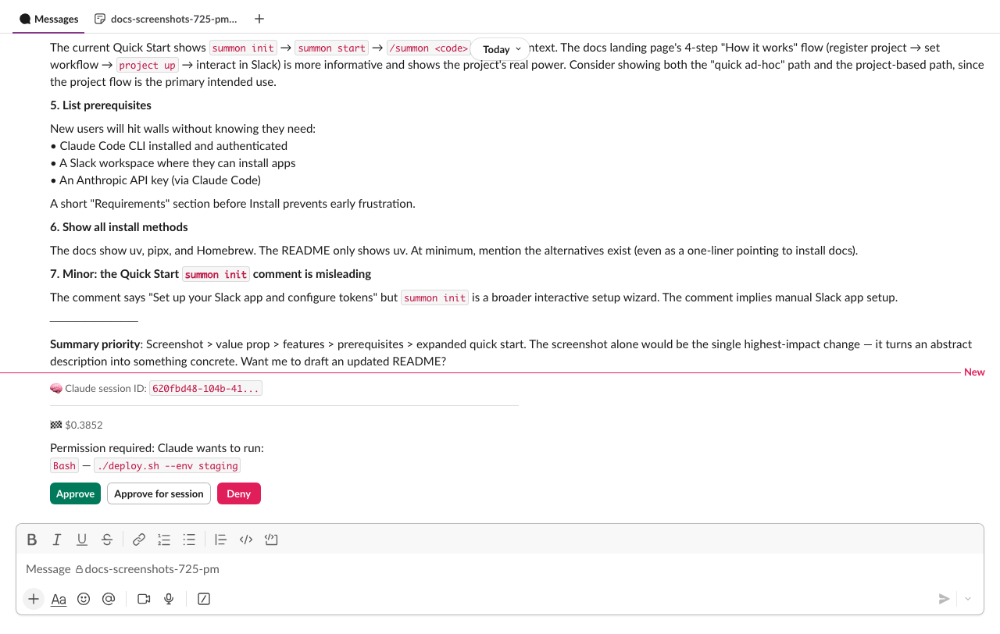

Agent Permissions¶
When Claude wants to run a tool that could modify files, execute commands, or take other consequential actions, summon pauses and asks for your approval in Slack. This keeps you in control without interrupting every read operation.

Read-only by default¶
Summon sessions start in read-only mode. Claude can freely use research tools (Read, Grep, Glob, WebSearch, etc.) but write-capable tools are blocked until the agent enters an isolated worktree.
Write-gated tools: Write, Edit, MultiEdit, NotebookEdit, Bash (and the SDK alias str_replace_editor)
When Claude tries to use a write-gated tool before entering a worktree, summon automatically denies the request with a message guiding Claude to use EnterWorktree first. Once Claude enters a worktree:
- The first write-gated tool triggers a one-time Slack approval prompt.
- After approval, writes within the worktree are auto-approved — CWD containment ensures file-targeting tools (Edit, Write, etc.) can only modify files inside the worktree without additional prompts.
- Writes outside the worktree still require Slack approval, with per-path session caching available.
Bashalways requires HITL on first use, with per-command session caching (exact match).
Safe-dir exception¶
You can configure directories where writes are allowed without entering a worktree:
summon config set SUMMON_SAFE_WRITE_DIRS "hack/,.dev/"
Files written to these directories bypass the worktree requirement entirely. Paths are resolved with symlink protection (Path.resolve() on both sides) to prevent escapes. Setting safe_write_dirs=. exempts the entire project directory for file-targeting tools (Bash remains gated regardless).
Auto-approved tools¶
The following tools are always approved without prompting. They are read-only and cannot modify your system:
| Tool | Description |
|---|---|
Read / Cat |
Read file contents |
Grep |
Search file contents |
Glob |
List files by pattern |
WebSearch |
Search the web |
WebFetch |
Fetch a URL |
LSP |
Language server protocol queries |
ListFiles |
List directory contents |
GetSymbolsOverview |
Read code symbols overview |
FindSymbol |
Find a symbol definition |
FindReferencingSymbols |
Find symbol references |
Summon's own MCP tools (summon-cli, summon-slack, summon-canvas) are also auto-approved — they are internal tools already scoped to the session's permissions.
Approval flow¶
When Claude requests a tool that needs approval:
- Interactive message — summon posts a message in the session channel with the tool details and action buttons.
- You click Approve, Approve for session, or Deny — the interactive message is deleted and a persistent confirmation is posted in the turn thread.
- Claude continues — if approved, Claude runs the tool; if denied, Claude is told the action was denied and adapts.
Claude wants to run:
`Bash`: `npm run build`
[Approve] [Approve for session] [Deny]
Approve for session¶
Clicking Approve for session caches the tool for the remainder of the session:
- Write-gated tools (Edit, Write, Bash, etc.) — the specific argument is cached: the file path for file tools, the command string for Bash. This prevents blanket
Edit(*)orBash(*)approval. Writes within the worktree are already auto-approved by CWD containment, so this mainly applies to writes outside the worktree and all Bash commands. - Other tools — the tool name is cached; all subsequent uses are auto-approved.
The confirmation message shows what was cached:
✅ Approved for session: `Bash`: `git status`
✅ Approved for session: `Edit`: `/etc/config.ini`
GitHub write tools are never session-cached
Tools in the GitHub MCP require-approval list (merge, delete branch, create PR, etc.) always require explicit Slack approval — even if you click "Approve for session." This is a defense-in-depth measure.
CWD containment and allowedTools
Write-gated tools that target paths outside the worktree always require Slack approval, even if your ~/.claude/settings.json includes them in allowedTools. This is the same defense-in-depth principle used for GitHub tools — allowedTools cannot override CWD containment.
Batched requests¶
If Claude requests multiple tools within a 2-second window (configurable via SUMMON_PERMISSION_DEBOUNCE_MS), they are batched into a single approval message:
Claude wants to perform 3 actions:
1. `Edit`: `src/auth/login.py`
2. `Write`: `src/auth/token.py`
3. `Bash`: `python -m pytest tests/test_auth.py`
[Approve] [Approve for session] [Deny]
Approve or Deny applies to all tools in the batch. "Approve for session" caches each tool's primary argument (file path or command).
Debounce tuning
The default 2000ms window catches most batches naturally. Lower it (e.g. SUMMON_PERMISSION_DEBOUNCE_MS=500) to reduce latency, or set it to 0 to get a separate message per tool.
Timeout¶
Permission requests expire after 10 minutes. If you do not respond:
- The request is automatically denied.
- The interactive message is deleted.
- A timeout message is posted in the turn thread.
- Claude is told the permission timed out and adapts (typically by reporting it could not complete the action).
GitHub MCP permissions¶
When GitHub is authenticated (via summon auth github login), Claude has access to GitHub tools via the remote MCP server. These follow separate permission tiers:
Auto-approved (read-only): Any tool with a get_, list_, or search_ prefix, plus pull_request_read and get_file_contents.
Always require Slack approval — checked before prefix rules, so no allowedTools pattern can bypass them:
| Tool | Reason |
|---|---|
merge_pull_request |
Irreversible |
delete_branch |
Irreversible |
close_pull_request |
Visible to others |
close_issue |
Visible to others |
push_files |
Writes to remote |
create_or_update_file |
Writes to remote |
update_pull_request_branch |
Modifies shared branch |
pull_request_review_write |
Visible to others |
create_pull_request |
Visible to others |
create_issue |
Visible to others |
add_issue_comment |
Visible to others |
Any GitHub MCP tool not on either list also requires Slack approval (fail-closed).
Defense in depth
The require-approval list is checked before prefix-based auto-approve. Even if your ~/.claude/settings.json has a broad allowedTools pattern that would normally permit these tools, summon still routes them to Slack for approval.
AskUserQuestion¶
Claude can ask you structured questions mid-task using the AskUserQuestion tool. This appears as an interactive message in the session channel:
Claude has a question for you
Which database should I use for the session store?
[SQLite] [PostgreSQL] [Redis] [Other]
- Single-select: click a button to answer and continue.
- Multi-select: toggle options, then click Done.
- Other: click Other to type a free-text answer in the channel.
Your answers are returned to Claude as structured data. The question times out after 5 minutes if unanswered. The interactive message is deleted after all questions are answered.
Permission flow (internal)¶
The full permission evaluation order in handle():
| Step | Check | Result |
|---|---|---|
| 0 | AskUserQuestion intercept | Route to interactive UI |
| 0b | Write gate (_WRITE_GATED_TOOLS) |
SDK deny → Deny; safe-dir → Allow; no worktree → Deny; first write → HITL; within CWD → Allow; outside CWD → fall through |
| 1 | SDK deny suggestions | Deny |
| 2 | Static auto-approve (_AUTO_APPROVE_TOOLS) |
Allow |
| 2b | GitHub deny-list (_GITHUB_MCP_REQUIRE_APPROVAL) |
Always HITL |
| 2c | GitHub auto-approve (prefix matching) | Allow |
| 2d | Summon MCP auto-approve (prefix matching) | Allow |
| 2e | Session-lifetime cached approvals | Allow (GitHub deny-list excluded) |
| 2f | Per-argument cache (exact match on primary arg) | Allow if arg matches (GitHub deny-list excluded) |
| 3 | SDK allow suggestions | Allow (write-gated tools excluded — CWD containment cannot be overridden) |
| 4 | Slack HITL (interactive message, deleted after) | User decides |
Authorization scope¶
Only the authenticated user for a session can approve or deny permission requests. The authenticated user is the person who claimed the session with /summon CODE in Slack.
If a different user clicks the approval buttons, the action is ignored with a warning logged. This prevents other workspace members from approving actions on your behalf.